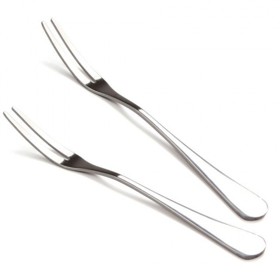
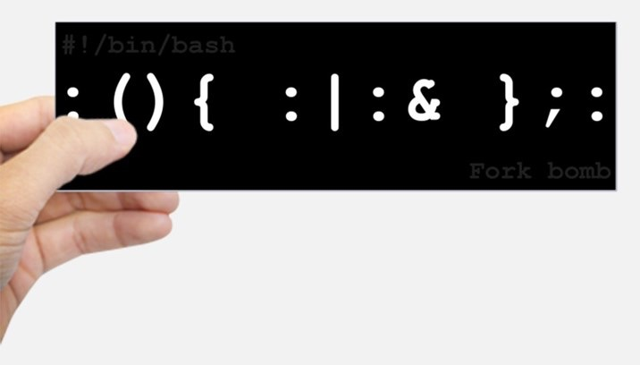

如果要创建状态机，我们应该提供什么样的 API？
UNIX 的答案: fork

int fork();
模拟状态机需要资源

:(){:|:&};: # 刚才的一行版本
:() { # 格式化一下
: | : &
}; :
fork() { # bash: 允许冒号作为标识符……
fork | fork &
}; fork
因为状态机是复制的，因此总能找到 “父子关系”
systemd-+-ModemManager---2*[{ModemManager}]
|-NetworkManager---2*[{NetworkManager}]
|-accounts-daemon---2*[{accounts-daemon}]
|-at-spi-bus-laun-+-dbus-daemon
| `-3*[{at-spi-bus-laun}]
|-at-spi2-registr---2*[{at-spi2-registr}]
|-atd
|-avahi-daemon---avahi-daemon
|-colord---2*[{colord}]
...
阅读程序，写出运行结果
pid_t x = fork();
pid_t y = fork();
printf("%d %d\n", x, y);
一些重要问题
阅读程序，写出运行结果
for (int i = 0; i < 2; i++) {
fork();
printf("Hello\n");
}
状态机视角帮助我们严格理解程序行为
./a.out./a.out | cat